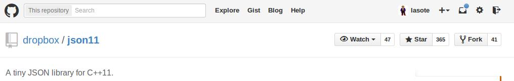
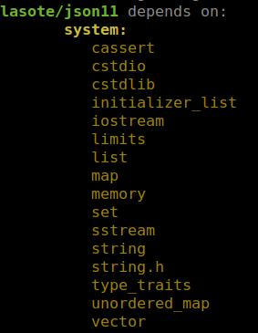

A few days ago, we came across this fantastic library from the Dropbox team, to encode and decode JSON using C++11. Syntax is very clean and attractive which makes the library very easy to use.
Also, this library is an ideal example to show how to upload to biicode your library like I did.
Why would you want to upload to biicode your library ?
Once it’s uploaded to biicode, everyone (including yourself) can reuse it easily and without any complex configuration.
This is key: If you make a good job configuring and uploading the library to biicode, nobody will EVER do this job again. The library will work for anyone just by typing #include “lasote/json11/json11.hpp”.

JSON11 by DROPBOX
Ok, it sounds convincing, show me how to do it!
1. Install biicode in your computer.
2. Fork original repository (OPTIONAL)
If the library is available on Github or another public git repository, it’s a good practice to fork the repository so in case the author updates we can merge them to our “biicode compatible” library easily. For this step, go to original repository and click on fork:

3. Init a new biicode project and create a new block
Easy-peasy, just like this:
1 2 3 | $ bii init json $ cd json $ bii new lasote/json11 |
If you already have a biicode user you can replace “lasote” with your username so you can publish your code when you finish this tutorial.
Now copy the source code into blocks/lasote/json folder or execute git clone into it (if you forked the original repository):
1 2 | $ cd blocks\lasote\json11 $ git clone git@github.com:lasote/json11.git . |
4. Check if biicode has found the relationships between your source code
It’s important that biicode locates all the #includes in your source code and the files that these includes point to.
Command “bii deps” give us all the information we need to know about the “dependency scanning” of biicode in our project:
1 | $ bii deps |

If biicode doesn’t find an #include it is shown under the “unresolved” section. As you can see in this case, everything is OK!
In future posts we will explain how to proceed in case of unresolved files.
5. Build our library
1 | $ bii build |
Wow! It fails a lot! What happened?
If we analyze the trace of the compilation we see this:
1 2 | c++0x_warning.h:32:2: error: #error This file requires compiler and library support for the ISO C++ 2011 standard. This support is currently experimental, and must be enabled with the -std=c++11 or -std=gnu++11 compiler options. |
It’s asking us to activate c++11. Expected… the original library needs c++11.
How can we activate C++11?
Biicode uses CMake for C/C++ project compilation. It creates a CMakeList.txt file where we can specify compilation flags etc.
If we edit the file we can see a lot of commented code with sample cases. In there, you can find how to activate C++11.
In this case, we want our library to be multi-platform and reusable so I will include these lines after ADD_BIICODE_TARGETS()
1 2 3 4 5 6 7 8 9 10 11 12 13 14 15 16 | # If exist BII_LIB_TARGET activate c++11 for target with PUBLIC flag. This way, all blocks that include this one will # have activated c++11 automatically IF(BII_LIB_TARGET) IF(APPLE) target_compile_options(${BII_LIB_TARGET} PUBLIC "-std=c++11 -stdlib=libc++") ELSEIF (WIN32 OR UNIX) target_compile_options(${BII_LIB_TARGET} PUBLIC "-std=c++11") ENDIF(APPLE) # If not exist, simply add CXX_FLAGS to compilation ELSE() IF(APPLE) SET(CMAKE_CXX_FLAGS "${CMAKE_CXX_FLAGS} -std=c++11 -stdlib=libc++") ELSEIF (WIN32 OR UNIX) SET(CMAKE_CXX_FLAGS "${CMAKE_CXX_FLAGS} -std=c++11") ENDIF(APPLE) ENDIF() |
Hereinafter, when someone #include (s) our library, he doesn’t need to activate C++11. Its ready!
NOTE: Maybe it seems too difficult, don’t you think? We are working on a feature to share or include CMakes recipes like this. Meanwhile you can just copy and paste this code to enable C++11 in your project.
UPDATE: With biicode you can reuse CMake recipes, so to activate C++11 you can include “biicode/cmake” block to search for ‘tools.cmake’ where this code is already implemented. Open CMakelists.txt in your project, include ‘tools‘ and activate C++11 like this:
1 2 3 4 5 | INCLUDE(biicode/cmake/tools) #Here you include "biicode/cmake/tools" file ADD_BIICODE_TARGETS() ACTIVATE_CPP11(INTERFACE ${BII_BLOCK_TARGET}) #Here you activate c++11 |
If we run build again:
1 | $ bii build |
It fails again, why? Let’s check the trace.
1 2 3 | In function 'int main(int, char**)': test.cpp:92:66: error: 'memcmp' was not declared in this scope assert(memcmp(uni[0].string_value().data(), utf8, sizeof utf8) == 0); |
It seems it cannot find memcmp, we #include “string.h” in test.cpp and if we build again:
1 2 3 4 5 6 7 8 9 10 11 12 | Building: cmake --build . BLOCK: lasote/json11 ----------------------------------------------------------- + EXE: lasote_json11_test -- Configuring done -- Generating done -- Build files have been written to: /tmp/json11/build [ 50%] Building CXX object lasote/json11/CMakeFiles/lasote_json11_test.dir/test.cpp.o [100%] Building CXX object lasote/json11/CMakeFiles/lasote_json11_test.dir/json11.cpp.o Linking CXX executable /tmp/json11/bin/lasote_json11_test [100%] Built target lasote_json11_test |
Now the library has been compiled! Go to “bin” folder and execute the main example:
1 2 | $ cd json11/bin $ ./lasote_json11_test |
1 2 3 4 5 6 7 8 9 10 | k1: v1b k3: ["a", 123, true, false, null] - "a" - 123 - true - false - null obj: {"k1": "v1", "k2": 42, "k3": ["a", 123, true, false, null]} {"key1": "value1", "key2": false, "key3": [1, 2, 3]} [[1, 2], [10, 20], [100, 200]] |
6. Upload to biicode: Publish the library
1 | $ bii publish |
Congrats! Now your library is on biicode’s cloud! :D
NOTE: Don’t forget to commit and push the changes to github if you forked the repository!
7. Check if anybody can reuse the library
After you upload to biicode the first version, its a good practice to create another biicode project and reuse from (include) the library to check if everything is working fine. This way we’ll simulate a third person reusing our code.
Exit previous biicode project folder and create another one:
1 | $ bii init example_json11 |
1 2 | $ cd example_json11 $ bii new lasote/example |
Write an example in a file “main.cpp” in blocks/lasote/example directory that #include our lasote/json11 library:
1 2 3 4 5 6 7 8 9 10 11 12 13 14 15 16 17 | #include "string.h" #include "lasote/json11/json11.hpp" #include <iostream> using namespace json11; using std::string; int main(int argc, char **argv) { // STRING TO JSON const string simple_test = R"({"k1":"v1", "k2":42, "k3":["a",123,true,false,null]})"; string err; auto json = Json::parse(simple_test, err); std::cout << "k1: " << json["k1"].string_value() << "\n"; std::cout << "k3: " << json["k3"].dump() << "\n"; } |
Build the example and run the example!
1 | $ bii build |
1 | $ example_json11/bin/lasote_example_json11_main |
1 2 | k1: v1 k3: ["a", 123, true, false, null] |
Yeeeeha!
We need your feedback! What do you think? Is it easy enough to upload to biicode? Do you think that we should share CMake recipes? What would you like?
If you want to upload to biicode your library we will be pleased to help if you need. Write us in the biicode forum and we will give you support!
Related Posts
Pingback: How to upload to biicode. Example 2: Box2D by Erin Catto - biicode Blog()
Pingback: How to upload to biicode Little CMS | biicode Blog()
Pingback: How to upload to biicode Oscpack | biicode Blog()
Pingback: How to upload to biicode. Example 5: libuv - biicode Blog()